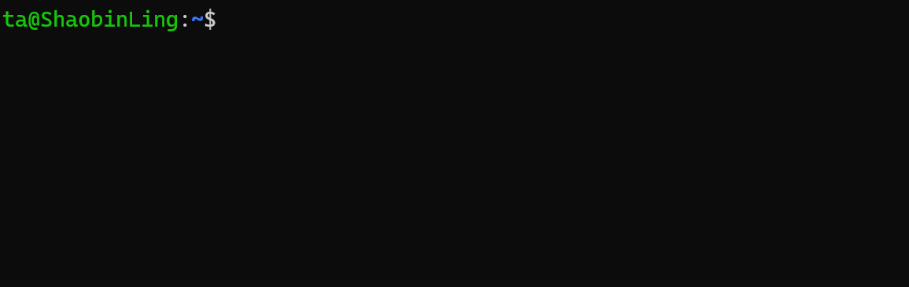

Quick Start Guide to Linux¶
Linux is an open-source operating system, and its kernel was created by Linus Torvalds in 1991.
Many companies and organizations build their own Linux distributions based on the Linux operating system, such as Google, Red Hat, and Ubuntu.
Currently, the ROS system mainly runs on the Ubuntu operating system, and Ubuntu itself is based on the Debian Linux distribution.
Therefore, if you want to deeply learn and practice robotics, it is best to install the Ubuntu operating system on your own computer, using WSL or a virtual machine such as VirtualBox or VMware.
More importantly, most artificial intelligence environments today are based on the Ubuntu operating system. For this reason, learning and practicing robotics is best done in an Ubuntu environment.
Terminal¶
First, we need to get familiar with something: the terminal.
The terminal is a text-based interface where users can enter commands, and the operating system executes corresponding actions based on those commands.
In the Ubuntu operating system, the terminal is a very important tool. Users can run various commands in the terminal, such as installing software, configuring the system, and running programs.
By using the terminal shortcut Ctrl + Alt + T, you can open an interface similar to the one shown below:

In this figure, ta is the username, the part after the @ symbol is the hostname (ShaobinLing), : is a separator, and ~ represents the current user’s home directory, which is also the path where the terminal is currently located.
You can type commands in this black window to perform corresponding operations. For example, entering the ls command lists the files and directories in the current directory.
You can also use the cd command to change the current directory. For example, entering:
will switch to the current user’s home directory.
Basic Linux Commands Experiment (Step by Step)¶
⚠️ Safety Notice for the Experiment (Very Important)¶
In this experiment, you will encounter commands that will actually modify files and directories, so it is crucial to read the following:
rmandmvwill directly delete or move files.rm -rfis extremely dangerous; if you write the path incorrectly, data cannot be recovered.- This experiment only allows operations within
~(your home directory). - It is strictly forbidden to run
rm -rfin system directories like/,/home,/usr, etc. - If system damage occurs due to incorrect operations, you will bear the responsibility for repair or compensation.
👉 Feel free to ask questions if you don't understand something.
I. Experiment Goal¶
Through a complete mini experiment, you will learn the following:
- The concept of paths in the Linux terminal.
- Common file/directory operations:
ls mkdir touch cp mv rm find cat - Using
geditto create and edit files. - Running Python programs in different ways and understanding:
- Relative paths.
- Absolute paths.
~(home directory).- Basic system and network commands:
ping,top. - How to execute a complete automation script.
II. Experiment 1: Manual Operations (Must be Done First)¶
1️⃣ Check Your Current Location¶
Make sure you are in your home directory (~).
2️⃣ Create an Experiment Workspace¶
3️⃣ Create Files and Directories¶
4️⃣ Use gedit to Create a Python File¶
In the opened editor, type and save:
5️⃣ Use find to Search for Files¶
Observe the output path.
6️⃣ View File Content¶
7️⃣ Copy, Move, and Delete Files (Be Careful)¶
⚠️ Do not use rm -rf / or randomly delete directories.
III. Experiment 2: Running Python and Understanding Paths¶
Make sure you are still in the ~/linux_exp directory:
Method 1: Relative Path¶
Method 2: Home Path¶
Method 3: Absolute Path¶
Please replace
<username>with the username in your terminal (the string before the@symbol).
Reflection¶
- Why do all three methods work?
- If you
cd ~, which ones will still work?
IV. Experiment 3: System and Network Commands (Observe Only)¶
View Processes (Press q to Quit)¶
Test Network (Ctrl + C to Stop)¶
V. Experiment 4: One-Click Automation Script (Key Focus)¶
1️⃣ Create the Script File¶
Write the following content and save:
#!/bin/bash
echo "=== Linux Basic Experiment Script Start ==="
cd ~
echo "[1] Creating experiment directory"
mkdir -p linux_script_exp/src
echo "[2] Creating Python file"
cat << EOF > linux_script_exp/src/hello.py
print("Hello from script")
EOF
echo "[3] Searching for the file"
find ~/linux_script_exp -name "hello.py"
echo "[4] Viewing file content"
cat linux_script_exp/src/hello.py
echo "[5] Running Python (relative path)"
cd linux_script_exp
python src/hello.py
echo "[6] Running Python (absolute path)"
python ~/linux_script_exp/src/hello.py
echo "[7] Creating, copying, moving, and deleting files"
touch test.txt
cp test.txt test_copy.txt
mv test_copy.txt test_moved.txt
rm test_moved.txt
echo "=== Script Execution Complete ==="
2️⃣ Add Execute Permissions¶
3️⃣ Execute the Script¶
Observe the output at each step and understand the script's content.
VI. Experiment Summary¶
In this experiment, you have used and understood the following:
📌 Three Ways to Write Paths¶
-
Absolute Path
/home/<username>/linux_exp/src/hello.py -
Relative Path
src/hello.py -
Home Path
~/linux_exp/src/hello.py
👉 Command success depends on: where you are and how you write the path.
VII. Check List (Self-check)¶
- I know what
pwddoes. - I will not casually use
rm -rf. - I can understand each command in the script.
- I understand why the same Python file can be executed in multiple ways.